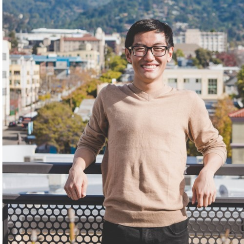
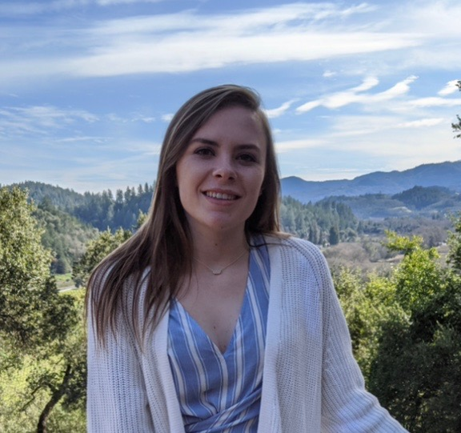

Staff
Instructors¶
 Anna Nguyen (bio) Hello! I just graduated from Cal after majoring in Data Science and Public Health and will be starting my MPH in Epidemiology and Biostatistics this fall. This is my sixth (!!) time on Data 8 staff and I'm super excited to be instructing this summer. Outside of Data Science, I like making poorly curated Spotify playlists, planning vacations I can't afford, and scrolling through Dogspotting on Facebook. I'm looking forward to getting to know everyone - stop by office hours to say hi!
anna-nguyen@berkeley.edu
|
 Philippe (Phil) Boileau (bio) Hey! I'm Phil, a third year graduate student in Biostatistics from Montreal. My love for data science and statistics is only surpassed by my fondness for poutine, which is quite the statement for a French Canadian! I'm looking forward to a great summer as a first-time instructor of Data 8!
philippe_boileau@berkeley.edu
|
Teaching Assistants ((u)GSIs)¶
 Alan Liang (bio) Hi! I just graduated with a CS and Economics double major and will be completing my master's degree at Cal next year. I'm sort of from Shanghai, and some things I enjoy include discovering good food, shibes, consumerism, and data science; guess which one is my favorite ;). Data 8 has been one of my favorite classes at Berkeley and I'm excited to be part of course staff this summer. Looking forward to a great summer and e-meeting you all!
alanliang@berkeley.edu
|

Alvin Yu (bio) Hi friends! I'm a rising senior studying business and data science. I love playing basketball, going for runs, watching Avatar the Last Airbender, and helping others learn. My Berkeley starter-pack includes the 8th floor of Unit 1 Putnam, Doe Library, GBC's chicken quesadillas, Sheng-Kee buns, and the homies on Benvenue, College, Channing, and Center.
alvinyu27@berkeley.edu
|
Angela Guan (bio) My name is Angela Guan, and I am from San Jose, CA. I am an incoming Senior studying data science, and I love Data 8! I am on the Cal Table Tennis team, and I enjoy going to beaches, hiking, cooking, traveling, and eating with friends. Looking forward to meeting you!
guanangela@berkeley.edu
|
 Colby Lewis V (bio) Happy to be staying with Data 8 before I move on to Biostatistics ~health data science~ grad school in the fall! When I'm not working, I like to cook, go on a run, listen to podcasts, and have friends over for board game nights. Sometimes the podcasts spill over into working, cooking, and running.
colbylewis2020@berkeley.edu
|
|
George Nacouzi (bio) Hi! I am a 4th year studying Applied Math and Data Science. I have previously lab assisted and tutored for Data 8, tutored math courses, and founded/facilitated a DeCal. Besides teaching, I love playing ultimate frisbee!
gnacouzi@berkeley.edu
|
Kanika Ahluwalia (bio) Hi all! I'm a rising senior studying Data Science from Irvine, CA. In my spare time, I enjoy watching travel vlogs, baking anything with chocolate, hiking with friends, and practicing photography. This is my first time being a uGSI and I am super excited to meet you all!
kwalia1999@berkeley.edu
|
 Katherine Tsai (bio) Hi everyone! I am a rising senior from Palos Verdes, CA studying Data Science and Cognitive Science. In my free time I like to take naps, dance, or get gelato with friends. Data 8 has been one of my favorite classes so far, and I am excited to get to know everyone this summer!
katherinetsai@berkeley.edu
|
 Lauren Liao (bio) Hello! I'm Lauren, your friendly neighborhood GSI, a second year in Master's Biostatistics. I enjoy neuroscience research and solving problems in public health. Excited to help you learn in Data 8 this summer!
ldliao@berkeley.edu
|
 Margaret Misyutina (bio) Hi everyone! I'm a rising junior from San Diego majoring in Data Science and minoring in Computer Science. I absolutely LOVE teaching Data 8; this is my fourth semester on staff! In my free time I enjoy exploring SF, watching sunsets, petting cats, and making smoothies :)
marmis@berkeley.edu
|
 Maya Rao (bio) I'm an almost-graduated senior, a Political Economy major and a newly-minted quarantine baker. Talk to me about technology policy, data science in politics or British history - or anything you'd like!
mayarao@berkeley.edu
|
Meghan Wang (bio) Hi everyone! I'm a third year studying Industrial Engineering and Operations Research. I'm originally from SoCal but have loved exploring the Bay Area. I had a great time being a Data 8 tutor the past 2 semesters and am looking forward to my 1st semester as a TA! Outside of classes, I love sewing, re-watching Marvel movies, and finding new music.
meghanwang@berkeley.edu
|
 Ophelia Wang (bio) Hi! My name is Ophelia and I'm a senior majoring in Data Science and Statistics. I took Data 8 in my freshmen year and it's one of my favorite classes at Cal! I love playing board games. Let me know what's your favorite board games during this summer!
wangyumeng2017@berkeley.edu
|
 Sophia Tan (bio) Hi everyone! I'm a rising fourth year from SoCal studying Molecular and Cell Biology and Data Science. I love binge-watching (and rewatching) shows, sunsets, and puzzles! I'm excited to meet you all and hope you enjoy the class!
sophiatan@berkeley.edu
|
 Umar Maniku (bio) Hi! I am a fourth-year Economics and Data Science major and I'm really excited to be teaching Data 8 over the summer! I'm looking forward to meeting you all!
manikui@berkeley.edu
|
 Winifred Chung (bio) I'm a third year Data Science major from sunny San Diego. I love spending copious amounts of time at the beach, getting lost in nature, curating Spotify playlists, and impulsively buying concert tickets. Hope you enjoy this class just as much as I did!
winifredchung@berkeley.edu
|
Tutors¶
 Brett Irvin (bio) Hi! I am a rising senior studying Business and minoring in Data Science. I like to cook new recipes from Bon Appetit, listen to podcasts, and hike in the Berkeley fire trails in my free time.
brettirvin@berkeley.edu
|
 Connor Clark (bio) I am an incoming senior from Burlingame, California studying data science with an emphasis in applied math and modeling. I love baseball, skiing, hiking, and anything else outdoors. One day I hope to work in management for a professional sports team.
connorcclark@berkeley.edu
|
Ellen Persson (bio) My name is Ellen Persson, and I have just finished my sophomore year at UC Berkeley pursuing a degree in Engineering Mathematics and Statistics (it's a long name, I know). I grew up in the Bay Area, but was born in Stockholm, Sweden. Aside from being on Data 8 course staff, I love going on hikes with dogs, playing Ultimate Frisbee, and baking!
nellepersson@berkeley.edu
|
Franco Achacoso (bio) Hey everyone! My name is Franco and I'm senior studying Data Science with an emphasis on Business Industrial Analytics. I took Data 8 Fall 2017 and it was my first introduction to coding. During a non-busy quarantine day, you can catch me being bad at CS:GO and League.
fachacoso@berkeley.edu
|
|
Inderpal Kaur (bio) Hi there! I'm a fourth year Data Science major minoring in English and CS. Data 8 was the course inspired me to major in the subject and I'm excited to be a part of course staff again this summer! Some of my other interests include watching too many YouTube videos, inserting Harry Potter references into everyday conversation, and searching for new coffee shops to visit.
ikaur@berkeley.edu
|
Jacqueline Yu (bio) Hello! I'm an incoming third year studying data science with a domain emphasis in cognition! I'm from the East Bay Area and some things I love include cats, Trader Joe's, passion fruit green tea w/ lychee jelly, dog memes, hiking, Pinterest, and secretly watching bad reality TV shows.
jacquelinekyu@berkeley.edu
|
Kevin Miao (bio) Hey you! My name is Kevin Miao, a rising senior from the Netherlands who is majoring in DS and minoring in CS. Feel free to reach out to me about literally anything: from DS/CS related questions to your favorite recipes or workouts.
kevinmiao@berkeley.edu
|

Natalie Gomas (bio) Hey guys, I'm a senior studying Data Science and this is my fourth semester on Data 8 course staff. I love hiking in the Berkeley hills and spending time with my friends. I'm looking forward to meeting you all!
nataliegomas@berkeley.edu
|
 Noor Hanafi (bio) Hi! My name is Noor Hanafi. I'm a junior and intended Data Science and Econ double major. I'm super excited to be a Data 8 tutor this summer and can't wait to (virtually) meet you all!
nhanafi@berkeley.edu
|
 Rita Wang (bio) I just finished my second year majoring in Computer Science and Data Science. In my free time, I like to explore photography, videography, listen to music, and watch movies. My friends say that I like to give sales-pitch on things (such as laptops, tablets, electronics) I am passionate about, so if you want to experience what it is like to be given a sales-pitch, hit me up.
ritawang@berkeley.edu
|
Ritvik Iyer (bio) I'm Ritvik, a rising Junior studying Statistics and Public Policy. Outside of school, I love to play card games, talk sports, and listen to music. Fun fact: I got a signed autograph from Michael Jordan after I wrote to him in 5th grade for a class project.
rikiiyer@berkeley.edu
|
Robbie Netzke (bio) I'm an applied math and (hopefully) data science major. I also like economics and I hope to combine all of that stuff when I head into the workforce. I was once a high school lacrosse player but now I'm a washed up athlete. Lets have a great summer in data 8!
netzke@berkeley.edu
|
 Sarina Xin (bio) Hi, I'm Sarina. I'm a senior industrial engineering and operations research major from upstate New York. Data 8 was one of my favorite classes, and I'm super excited to be on course staff again. I live for cute cafes, fluffy clouds, and good kombucha. Looking forward to meeting you all!
sarina.xin@berkeley.edu
|
Sunny Shen (bio) Hi guys! I'm a rising junior studying Economics and Data Science. Data 8 has been one of my favorite classes at Cal and hope you will enjoy it! I love photography, traveling, and A Cappella. I'm always down to make friends and talk about life, school, hobbies, or anything you want!
sunnyshen@berkeley.edu
|
 Sydnie Zanone (bio) Hi! I'm a rising junior from San Jose majoring in computer science, and this will be my second time as a Data 8 tutor. In my free time, I like practicing the piano, trying out different foods in Berkeley, and falling down Youtube rabbit holes. Looking forward to working with you all this summer!
sydniezanone@berkeley.edu
|